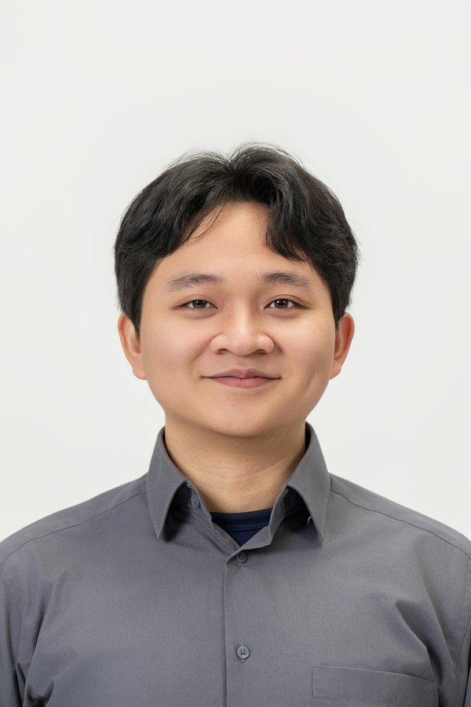

Building intelligent systems at the intersection of AI, robotics, and edge computing. From LLM fine-tuning and smart braille printers to autonomous marine vehicles.
M.S. Electronics Engineering, Kookmin University — Currently at orinu.ai, Seoul

AI Developer and Robotics Engineer with hands-on experience in LLM fine-tuning (T5, Gemma, LLaMA with LoRA, QLoRA, and RAG) and real-time robotic systems using ROS 2 and NVIDIA Jetson platforms. Proven track record in applied research, publishing papers in IEEE Access and MDPI Sensors, and building intelligent systems across industries.
From autonomous marine vehicles at University of Indonesia's Robotics Team to 5G-connected drones at XL Axiata, from Optical Camera Communication research at Kookmin University to Smart Braille Printers at orinu.ai — I bridge AI and robotics to solve real-world problems.
Seoul, South Korea (2022 – 2024)
University of Indonesia (2018 – 2022)
orinu.ai — Hwaseong, KR
Open to global opportunities
Bridging AI research and engineering across robotics, edge computing, communications, and intelligent systems.
Fine-tuning large language models (T5, Gemma, LLaMA) with LoRA, QLoRA, and RAG pipelines. Building translation engines and conversational AI for production deployment.
Real-time robotic systems on Jetson platforms. Robotic arms, autonomous marine vehicles (USV/AUV), and drone systems with integrated computer vision pipelines.
8+ production Edge AI systems on NVIDIA Jetson. TensorRT INT8/FP16 optimization achieving 67% model compression. Full-stack: FastAPI + React + WebSocket streaming.
CNN, LSTM, GCN, and hybrid architectures for signal processing, image recognition, and time-series forecasting. Published research on solar energy prediction and OCC systems.
2D MIMO OCC systems, CSMA/CA MAC protocol design for optical communication, and ultra-high-rate OCC with precision localization. Published in IEEE Access.
Intelligent IoE platforms, sensor integration with LoRa mesh networks, solar energy forecasting with GCN-BiLSTM models, VPP ESS platforms, and V2X communication.
Peer-reviewed publications in international journals, conferences, and technical competitions.
AI/ML research, Edge AI deployments on Jetson, IoT systems, and full-stack applications.
Next-day photovoltaic solar power prediction across 10 South Korean sites. Flask REST API with 6 deep learning architectures trained on Korea Meteorological Administration weather data.
Comparative study: ARIMA/SARIMA/SARIMAX vs LSTM/BiLSTM/GRU/RNN on 503,910 smart meter records with weather features.
Experimental conversational AI with LangGraph — stateful multi-turn dialogue, agent workflows, and LLM orchestration using OpenAI/Anthropic/OpenRouter APIs.
View on GitHubCentral deployment hub for all 8 edge AI projects. TensorRT INT8/FP16 model compression achieving 67% total size reduction (482 MB to 152 MB). Includes all compressed models, inference scripts, SCP/USB transfer utilities, and shared Python library with TensorRT inference engine, async video capture, WebSocket streaming, and Docker base images.
Real-time 80-class COCO detection. Full stack: FastAPI backend, React/TypeScript frontend, WebSocket streaming. TensorRT FP16 targeting 20-25 FPS at 416x416 on Jetson Nano.
View on GitHubInsightFace buffalo_s with RetinaFace + ArcFace recognition + MiniFASNet anti-spoofing. Multi-angle enrollment (5 angles). Full stack with PostgreSQL. INT8 compressed: 158 MB to 40 MB. 15-20 FPS.
View on GitHubMulti-PPE detection (Hardhat, Vest, Glasses, Gloves, Mask) with zone-based compliance for Construction/Manufacturing/Chemical zones. YOLOv8n with TensorRT INT8 (3.4 MB model).
View on GitHubYOLOv8 plate detection + EasyOCR/PaddleOCR. SORT vehicle tracking. Indonesian plate format validation. Watchlist monitoring with alerts. Full stack with PostgreSQL + React.
View on GitHubMotion detection (MOG2/KNN), polygon zone-based intrusion detection, and loitering detection with time tracking. YOLOv8n person detection + DeepSort tracking. INT8/FP16 compressed.
View on GitHubLine crossing counter, zone occupancy monitoring, traffic flow analysis. HOG fallback when no ML model available. JSON statistics output. 25-30 FPS with TensorRT on Jetson.
View on GitHubMediaPipe 21-landmark hand tracking with 9 gesture classes (FIST, OPEN_PALM, THUMBS_UP, etc.). Custom ML classifier training pipeline. Action mapping with cooldown. 15-20 FPS on Jetson.
View on GitHubPush-up, squat, plank tracking using MediaPipe/YOLOv8-pose/MoveNet. Rep counting via joint angle calculation. Real-time form analysis with corrective feedback.
View on GitHubMulti-sensor IoT system: Arduino nodes with DHT22, dust (PM2.5/PM10), vibration, and sound sensors. LoRa wireless mesh to central receiver. Python backend logging to MariaDB with Telegram bot alerts on anomalies.
View on GitHubReal-time face detection using OpenCV DNN (Caffe SSD model) with automatic Telegram photo alerts. Configurable confidence threshold and frame skip rate. Non-blocking async notification delivery.
View on GitHubIndonesian speech-to-text using Google Cloud Speech-to-Text API. FLAC audio processing via FFmpeg. Async long-running recognition optimized for Bahasa Indonesia (id-ID). Google Cloud Storage for audio files.
View on GitHubCyberbullying detection and reporting platform for Twitter/X. Keyword-based tweet search via Twitter API v1.1, community reporting system, and educational materials on cyberbullying awareness.
View on GitHubVehicle inventory management with CRUD operations, image upload, and multi-user team support with Jetstream 2FA authentication. Reactive UI with Livewire components.
View on GitHubTournament management with auto-generated randomized brackets, podium/medal tracking, public bracket sharing, and email notifications. Jetstream auth with 2FA. Team project (7 members).
View on GitHubRecognized in international and national robotics competitions representing Indonesia.
International underwater robotics competition
Miami, FL, USA · 2019
2021
Kontes Kapal Cepat Tak Berawak Nasional, Indonesia
Kontes Kapal Cepat Tak Berawak Nasional, Indonesia
Contributed to major national research projects at Kookmin University, funded by Korean government ministries.
2022 – 2024
2022 – 2024
2022 – 2024
2022 – 2024
2022 – 2024
2022 – 2024
Electrical & Electronics Engineering
Sep 2022 – Aug 2024 · Seoul, South Korea
Computer Engineering · GPA 3.43
Aug 2018 – Sep 2022 · Depok, Indonesia
Technologies and tools across engineering, research, and development.
Available for AI/robotics engineering roles, research collaborations, and consulting projects. Currently based in Seoul, South Korea.
muhammadmiftahfaridh@gmail.com